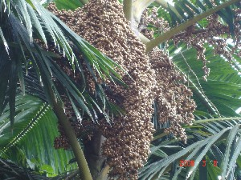
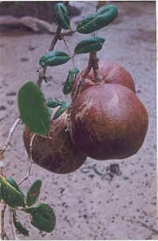
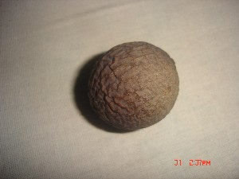

edible fruit
bijo बीजो Etym: North Andaman; उत्तरी अण्डमान. N सं. a large sour fruit found in the forest; जंगल का एक बड़ा खट्टा फल. SD: edible fruit, खाद्य फल.
boʈol बोटोल N सं. fruit used as a toy by children; फल जिसे बच्चे खेलने के लिए प्रयोग करते हैं. SD: edible fruit, खाद्य फल, sports, खेल-कूद.
bui1 बूई Etym: North Andaman; उत्तरी अण्डमान. N सं. small sour fruit; छोटा खट्टा फल. SD: edible fruit, खाद्य फल. SEE: bui2 ‘kind person’ ‘दयालु व्यक्ति बूईhm:{2}’; bui3 ‘shell’ ‘सीपी बूईhm:{3}’.
buroŋ बूरोङ Etym: North Andaman; उत्तरी अण्डमान. N सं. vegetarian food; एक प्रकार का शाकाहारी खाना. SD: edible fruit, खाद्य फल.
cɑemeɔtotco चाएमेऔतोतचो MORPH: cɑe-meɔ-totco. N सं. mango; आम. SD: edible fruit, खाद्य फल.
cɑetɔkcɔ चाएतौकचौ MORPH: cɑe-tɔk-cɔ. N सं. a kind of sour fruit; एक प्रकार का खट्टा फल. SD: edible fruit, खाद्य फल.
 |
cɑrɑšilutotco चाराशीलूतोत्चो MORPH: cɑrɑšilu-tot-co. N सं. fruit of carashilu tree; चाराशीलू पेड़ का फल. SD: edible fruit, खाद्य फल.
 |
cɑʈɑletotco चाटालेतोत्चो MORPH: cɑʈɑle-tot-co. N सं. red palm fruit; लाल ताड़ का फल. SD: edible fruit, खाद्य फल.
 celet चेलेत Etym: North Andaman; उत्तरी अण्डमान. VAR: cɛlet चैलेत. N सं. a small-sized red fruit; छोटे आकार का लाल फल. SD: edible fruit, खाद्य फल. NT: One’s mouth turns red after eating this fruit, which is believed to increase blood in the body. इस फल को खाने से मुंह लाल हो जाता है। यह फल ख़ून बढ़ाता है।.
celet चेलेत Etym: North Andaman; उत्तरी अण्डमान. VAR: cɛlet चैलेत. N सं. a small-sized red fruit; छोटे आकार का लाल फल. SD: edible fruit, खाद्य फल. NT: One’s mouth turns red after eating this fruit, which is believed to increase blood in the body. इस फल को खाने से मुंह लाल हो जाता है। यह फल ख़ून बढ़ाता है।.
cɛɖɛlo चैडैलो N सं. a kind of fruit; एक प्रकार का फल. SD: edible fruit, खाद्य फल. NT: It is burnt and ground into a paste by Ranchis to be used as a body-paint. रांची लोग इसे जलाकर पीसते हैं और उससे से बनी लेई को शरीर को रंगने के काम में लाते हैं।.
 |
 cop चोप VAR: coːp चोप. N सं. orange coloured sour fruit; lemon; एक नारंगी रंग का खट्टा फल; नींबू. SD: edible fruit, खाद्य फल.
cop चोप VAR: coːp चोप. N सं. orange coloured sour fruit; lemon; एक नारंगी रंग का खट्टा फल; नींबू. SD: edible fruit, खाद्य फल.
cɔe चौए N सं. a kind of fruit; एक प्रकार का फल. SD: edible fruit, खाद्य फल.
 cɔp2 चौप VAR: cop चोप. N सं. a sweet-sour fruit; एक खट्टा मीठा फल. SD: edible fruit, खाद्य फल. SEE: cɔp1 ‘fish’ ‘मछली चौपhm:{1}’; cɔp3 ‘tree’ ‘पेड़ चौपhm:{3}’; cɔp4 ‘weight’ ‘वज़न चौपhm:{4}’.
cɔp2 चौप VAR: cop चोप. N सं. a sweet-sour fruit; एक खट्टा मीठा फल. SD: edible fruit, खाद्य फल. SEE: cɔp1 ‘fish’ ‘मछली चौपhm:{1}’; cɔp3 ‘tree’ ‘पेड़ चौपhm:{3}’; cɔp4 ‘weight’ ‘वज़न चौपhm:{4}’.
cɔroŋ चौरोङ N सं. a grape-like fruit with flat seeds; अंगूर की तरह का फल जिसके सपाट बीज होते हैं. SD: edible fruit, खाद्य फल. NT: This fruit is boiled in water and then the syrup is used as a sweetener. इस फल को उबाल कर चाशनी बनाई जाती है।.
culemo चूलेमो VAR: culɛmo चूलैमो. N सं. berry; बेरी फल. ŋu-ʈʰi culɛmo-bi tɛše pʰu-tɛš-ɑmo ʈʰu-ŋol-o-bom ङूठी चूलैमोबी तैशे फूतैशामो ठूङोलोबोम. If you do not give me the berries, I will cry. अगर तुम मुझे बेर नहीं दोगे तो मैं रो पड़ूंगा।. SD: flora, फूल-पत्ती, edible fruit, खाद्य फल.
ebeːnɔ एबेऽनौ N सं. fruit, overripe; ज़्यादा पका हुआ फल. SD: edible fruit, खाद्य फल.
ebijow एबीजोव N सं. fruit, unripe; कच्चा फल. SD: edible fruit, खाद्य फल.
eccoɖop एच्चोडोप MORPH: et-co-ɖop. N सं. raw fruit; कच्चा फल. SD: edible fruit, खाद्य फल.
ekkoːl एक्कोऽल N सं. fruit, half ripe; आधा पका हुआ फल. SD: edible fruit, खाद्य फल.
emyoːy2 एम्योऽय ADJ वि. sour in taste; स्वाद में खट्टा. SD: attribute, विशेषता, edible fruit, खाद्य फल. SEE: emyoːy1 ‘lemon tree’ ‘नींबू का पेड़ एम्योऽयhm:{1}’.
epʰuŋ1 एफूङ MORPH: e-pʰuŋ. VAR: efuŋ एफूङ. N सं. fruit, ripe; पका फल. SD: edible fruit, खाद्य फल. SEE: epʰuŋ2 ‘fully ripe’ ‘पका हुआ एफूङhm:{2}’.
 etco एत्चो VAR: ecco एच्चो. N सं. fruit; फल. SD: edible fruit, खाद्य फल.
etco एत्चो VAR: ecco एच्चो. N सं. fruit; फल. SD: edible fruit, खाद्य फल.
 etcopʰuŋ एत्चोफूङ N सं. ripe fruit; पका फल. SD: edible fruit, खाद्य फल.
etcopʰuŋ एत्चोफूङ N सं. ripe fruit; पका फल. SD: edible fruit, खाद्य फल.
etcow एतचोव N सं. fruit, of tree; पेड़ का फल. SD: edible fruit, खाद्य फल.
eʈɑle एटाले MORPH: e-ʈɑle. N सं. a kind of edible fruit; एक प्रकार का खाद्य फल. SD: edible fruit, खाद्य फल.
ɛːr ऐःर N सं. a kind of bitter fruit; एक प्रकार का कड़वा फल. SD: edible fruit, खाद्य फल.
 ɛrco1 ऐरचो MORPH: ɛr-co. VAR: er-co एरचो. Etym: North Andaman; उत्तरी अण्डमान. VAR: ɛco ऐचो. N सं. fruit; फल. SD: edible fruit, खाद्य फल. SEE: ɛrco2 ‘head; skull’ ‘सिर; खोपड़ी ऐरचोhm:{2}’.
ɛrco1 ऐरचो MORPH: ɛr-co. VAR: er-co एरचो. Etym: North Andaman; उत्तरी अण्डमान. VAR: ɛco ऐचो. N सं. fruit; फल. SD: edible fruit, खाद्य फल. SEE: ɛrco2 ‘head; skull’ ‘सिर; खोपड़ी ऐरचोhm:{2}’.
ɛulu ऐऊलू N सं. flesh, of any fruit; किसी फल का गूदा. SD: edible fruit, खाद्य फल.
ibijo ईबीजो N सं. fruit, ripe; पका फल. SD: edible fruit, खाद्य फल.
 |
iltotco ईल्तोत्चो N सं. a kind of brown fruit; एक प्रकार का भूरा फल. SD: edible fruit, खाद्य फल.
kɑbɑ2 काबा VAR: kɑːbɑ काऽबा. N सं. a kind of edible fruit; एक प्रकार का खानेवाला फल. SD: edible fruit, खाद्य फल. SEE: kɑbɑ1 ‘creeper’ ‘लता काबाhm:{1}’.
kɑtɑ काता N सं. a kind of sour fruit; एक प्रकार का खट्टा फल. SD: edible fruit, खाद्य फल.
kelɛptɔe केलैपतौए N सं. lime; चूना. SD: edible fruit, खाद्य फल.
kɛmɔ कैमौ N सं. a kind of small bitter tasting fruit; एक प्रकार का छोटा कड़वा आंवला फल. SD: edible fruit, खाद्य फल.
kocɑ कोचा N सं. a kind of fruit; a kind of creeper; एक प्रकार का फल; एक प्रकार की लता या बेल. SD: edible fruit, खाद्य फल, flora, फूल-पत्ती. NT: This fruit is used for making jungle wine. जंगली/ देसी शराब बनाने में काम आने वाला फल और बेलें।.
 konɑpʰole2 कोनाफोले VAR: konnɑpʰole कोन्नाफोले. N सं. a kind of fruit; एक प्रकार का फल. SD: edible fruit, खाद्य फल. SEE: konɑpʰole1 ‘clay (white)’ ‘मिट्टी (सफ़ेद) कोनाफोलेhm:{1}’.
konɑpʰole2 कोनाफोले VAR: konnɑpʰole कोन्नाफोले. N सं. a kind of fruit; एक प्रकार का फल. SD: edible fruit, खाद्य फल. SEE: konɑpʰole1 ‘clay (white)’ ‘मिट्टी (सफ़ेद) कोनाफोलेhm:{1}’.
 |
konɑtɔtco कोनातौतचो MORPH: konɑ-tɔt-co. N सं. kona fruit; कोना फल. SD: edible fruit, खाद्य फल. NT: Sweet fruit. एक मीठा फल।.
 konnɑ कोन्ना VAR: konɑ कोना. N सं. Tendu fruit; तेंदू फल.
konnɑ कोन्ना VAR: konɑ कोना. N सं. Tendu fruit; तेंदू फल.  tʰirebi konnɑ lišokom थीरेबी कोन्ना लीशोकोम. The children finished all the Tendu fruit. बच्चों ने सारा तेंदू फल ख़त्म कर दिया।. SD: edible fruit, खाद्य फल. NT: Common fruit of the Andamans. Found in Mayabandar (North Andaman). अण्डमान द्वीप का बहुत प्रचलित फल। उत्तरी अण्डमान में मायाबंदर में पाया जाता है।.
tʰirebi konnɑ lišokom थीरेबी कोन्ना लीशोकोम. The children finished all the Tendu fruit. बच्चों ने सारा तेंदू फल ख़त्म कर दिया।. SD: edible fruit, खाद्य फल. NT: Common fruit of the Andamans. Found in Mayabandar (North Andaman). अण्डमान द्वीप का बहुत प्रचलित फल। उत्तरी अण्डमान में मायाबंदर में पाया जाता है।.
 korbo कोरबो VAR: kɔrbo कौरबो. N सं. a sour fruit; एक प्रकार का खट्टा फल. SD: edible fruit, खाद्य फल.
korbo कोरबो VAR: kɔrbo कौरबो. N सं. a sour fruit; एक प्रकार का खट्टा फल. SD: edible fruit, खाद्य फल.
kɔetɔ कौएतौ VAR: kɔeʈɔ कौएटौ. N सं. jackfruit; कटहल. SD: edible fruit, खाद्य फल.
kɔetɔtɔtco कौएतौतौतचो MORPH: kɔe-tɔtɔtco. N सं. fruit of koeto; कोएतो का फल. SD: edible fruit, खाद्य फल.
 kɔfɔ कौफौ VAR: kɔpʰo कौफो; kɔpʰu कौफू. N सं. banana; केला. SD: edible fruit, खाद्य फल.
kɔfɔ कौफौ VAR: kɔpʰo कौफो; kɔpʰu कौफू. N सं. banana; केला. SD: edible fruit, खाद्य फल.
kɔfɔʈoʈɔ कौफौटोटौ MORPH: kɔfɔ-ʈoʈɔ. N सं. cluster of bananas; केलों का गुच्छा. SD: edible fruit, खाद्य फल.
 |
kɔitoco कौईतोचो MORPH: kɔito-co. N सं. fruit, of the koito tree; कौईतो पेड़ का फल. SD: edible fruit, खाद्य फल.
loeʈʰo लोएठो N सं. a kind of sweet fruit; एक प्रकार का मीठा फल. SD: edible fruit, खाद्य फल. NT: It is green white stripes. सफ़ेद धारियों वाला हरे रंग का फल।.
mẽɔyɖoːb मेंऔयडोऽब MORPH: mẽɔy-ɖoːb. N सं. green mango; हरा आम. SD: edible fruit, खाद्य फल.
mẽɔypʰun मेंऔयफून MORPH: mẽɔy-pʰun. N सं. ripe mango; पका आम. SD: edible fruit, खाद्य फल.
mioepʰuŋ मीओएफूङ MORPH: mioe-pʰuŋ. VAR: miyɔe-pʰuŋ मीयौएफूङ. N सं. mango, ripe; पका हुआ आम. SD: edible fruit, खाद्य फल.
miɔe मीऔए N सं. lemon; नींबू. SD: flora, फूल-पत्ती, edible fruit, खाद्य फल.
miyɔe मीयौए N सं. a sour fruit; एक प्रकार का खट्टा फल. SD: edible fruit, खाद्य फल.
 |
 ɔrotutco औरोतूत्चो MORPH: ɔro-tut-co. N सं. kevra fruit; केवड़े का फल. SD: edible fruit, खाद्य फल.
ɔrotutco औरोतूत्चो MORPH: ɔro-tut-co. N सं. kevra fruit; केवड़े का फल. SD: edible fruit, खाद्य फल.
pʰɔrɔto1 फौरौतो MORPH: pʰɔrɔ-to. VAR: poro-to पोरोतो. Etym: North Andaman; उत्तरी अण्डमान. N सं. a sweet fruit; एक प्रकार का मीठा फल. SD: edible fruit, खाद्य फल. NT: Only the inner part of the fruit is eaten. इस फल का गूदा खाया जाता है।. SEE: pʰɔrɔto2 ‘tree’ ‘पेड़ फौरौतोhm:{2}’.
soe सोए N सं. a kind of sweet-sour fruit that tastes like an apple; खट्टा-मीठा फल जो खाने में सेब जैसा होता है. SD: edible fruit, खाद्य फल.
sulu3 सूलू N सं. Pandanus fruit; केवड़ा फल. SD: edible fruit, खाद्य फल. SEE: sulu1 ‘younger one’ ‘अनुसरण करने वाला सूलूhm:{1}’; sulu2 ‘younger one’ ‘अनुसरण करने वाला सूलूhm:{2}’.
tinɖu तीन्डू VAR: tendu तेन्दू. Etym: Hindi. N सं. a kind of fruit; एक प्रकार का फल. SD: edible fruit, खाद्य फल.
 |
ʈɑtotco टातोतचो MORPH: ʈɑ-tot-co. N सं. fruit of the Ta tree; टा पेड़ का फल. SD: edible fruit, खाद्य फल.
ʈɔkʰotcio टौखोत्चीओ MORPH: ʈɔkʰo-t-cio. N सं. papaya fruit; पपीता. SD: edible fruit, खाद्य फल.
ʈɔkotɔcceo टौकोतौच्चेओ N सं. a kind of fruit; एक प्रकार का फल. SD: edible fruit, खाद्य फल.
ʈʰuʈʰu ठूठू N सं. lime; चूना. SD: edible fruit, खाद्य फल.